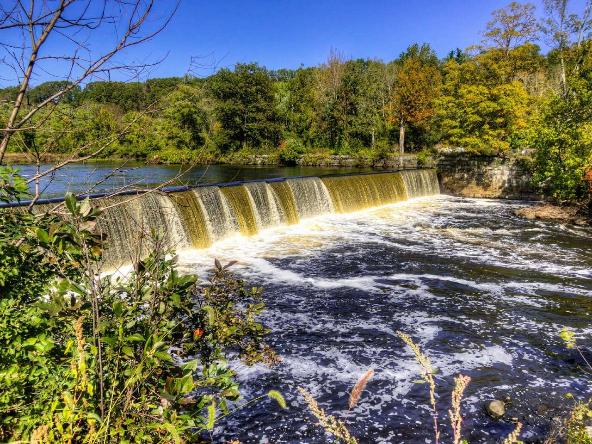

Cumberland, Rhode Island, is a quiet and scenic destination ideal for a relaxing vacation. Nestled in the northern part of the state, it offers a mix of outdoor recreation, history, and small-town charm. Visitors can enjoy hiking and panoramic views at Diamond Hill State Park or bike along the Blackstone River Greenway, a picturesque trail that follows the historic river. The town is rich in heritage, with attractions like the Berkeley Mill Village and cultural venues such as the Blackstone River Theatre, which hosts concerts and festivals year-round. Local events like Cumberland-Fest and the Arnold Mills Fourth of July Parade give travelers a chance to experience the community's vibrant spirit. Food lovers will appreciate local favorites like Davenport's Restaurant and The Ice Cream Machine Company, both known for their homemade flavors and welcoming atmospheres. Overall, Cumberland is perfect for those looking to unwind, explore nature, and get a taste of authentic New England life.
